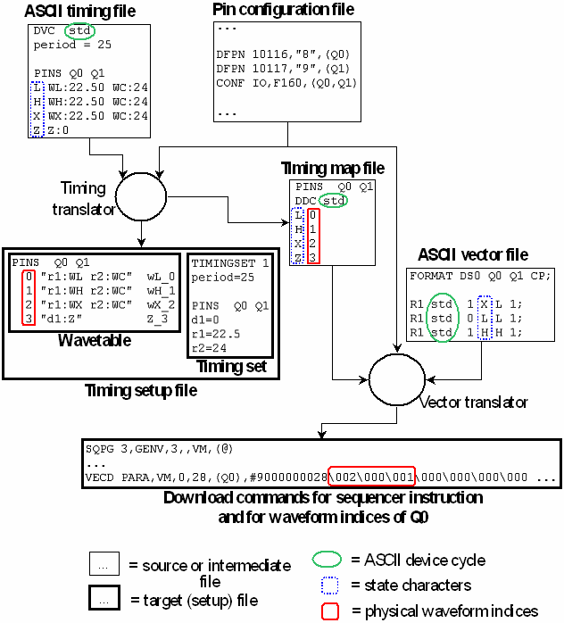

The Overall Process
The following figure gives a comprehensive overview of the translation process for the ASCII timing and vector file fragments displayed in ASCII Timing File and ASCII Vector File. The vertical layout of the figure roughly corresponds to the chronological order.
